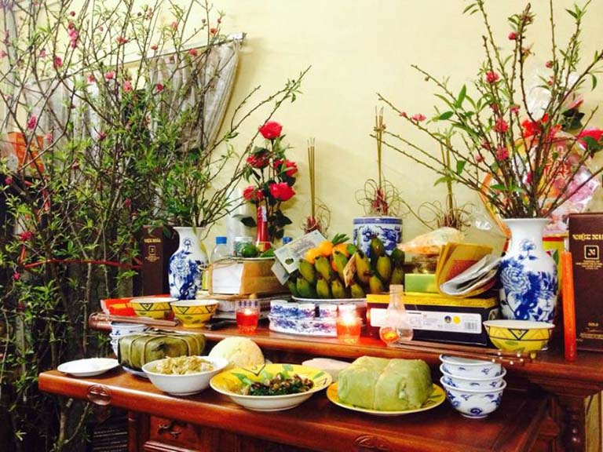
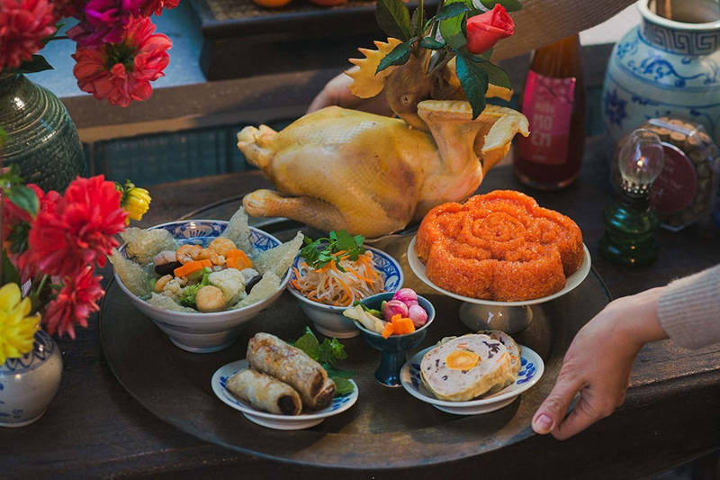
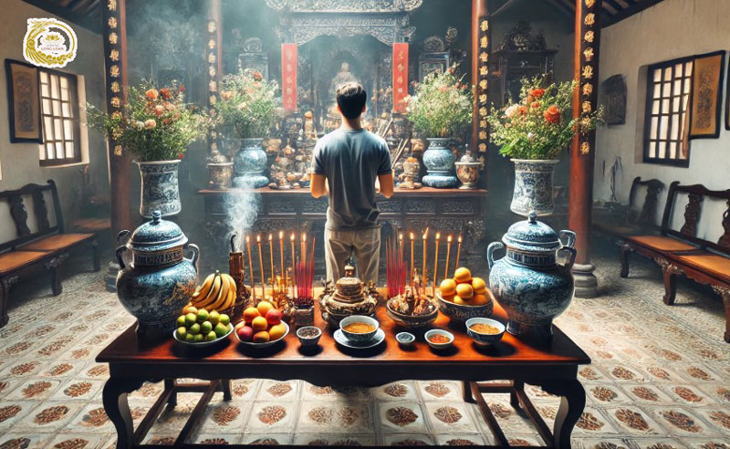

🕯️ Phong Tục Thờ Cúng Tổ Tiên
Ý Nghĩa Tưởng Nhớ Ông Bà
Thờ cúng tổ tiên là một trong những phong tục quan trọng nhất của người Việt Nam, đặc biệt trong dịp Tết.
Đây không chỉ là nghi lễ tôn giáo mà còn là cách thể hiện lòng hiếu thảo, biết ơn và tưởng nhớ đến những người đã khuất.
Tầm Quan Trọng Của Việc Thờ Cúng
- Đạo hiếu: Thể hiện lòng hiếu thảo với ông bà, cha mẹ đã khuất
- Kết nối thế hệ: Duy trì mối liên hệ giữa người sống và người đã khuất
- Giáo dục: Dạy con cháu về lòng biết ơn và tôn trọng tổ tiên
- Tâm linh: Tin rằng tổ tiên sẽ phù hộ cho con cháu trong cuộc sống
- Văn hóa: Gìn giữ truyền thống văn hóa dân tộc qua nhiều thế hệ
Mâm Cỗ Ngày Tết
Mâm cỗ cúng tổ tiên ngày Tết là một phần không thể thiếu, thể hiện sự thành kính và biết ơn của con cháu.
Các Món Ăn Trong Mâm Cỗ
🍽️ Mâm Cỗ Tết Thường Bao Gồm:
- Bánh chưng/bánh tét: Món ăn truyền thống không thể thiếu
- Xôi gấc: Màu đỏ tượng trưng cho may mắn
- Gà luộc: Nguyên con, đẹp mắt, tượng trưng cho sự đầy đủ
- Giò chả: Giò lụa, giò thủ, chả quế
- Nem rán/chả giò: Món ăn phổ biến ngày Tết
- Thịt kho tàu: Món ăn truyền thống miền Nam
- Canh măng: Canh măng khô nấu với thịt
- Dưa hành, củ kiệu: Món ăn kèm giải ngấy
- Trái cây ngũ quả: 5 loại quả khác nhau
- Bánh kẹo, mứt: Các loại bánh kẹo truyền thống
- Rượu, trà: Để dâng lên tổ tiên
- Hương, đèn, hoa: Hoa tươi, nến, nhang
Cách Bày Biện Mâm Cỗ
- Bàn thờ: Lau chùi sạch sẽ, sắp xếp gọn gàng
- Vị trí món ăn:
- Giữa: Bánh chưng/bánh tét, xôi gấc
- Trước: Gà luộc, giò chả
- Hai bên: Các món ăn khác
- Phía sau: Trái cây, bánh kẹo
- Trang trí: Đặt hoa tươi, thắp đèn, hương
- Thời gian: Thường cúng vào đêm Giao thừa và sáng mùng 1
Nghi Lễ Thờ Cúng
1. Cúng Giao Thừa (Đêm 30 Tết)
Đây là nghi lễ quan trọng nhất, đánh dấu thời khắc chuyển giao giữa năm cũ và năm mới.
- Chuẩn bị mâm cỗ đầy đủ
- Thắp hương, đèn trên bàn thờ
- Cả gia đình quây quần, người lớn tuổi nhất đọc lời khấn
- Vái lạy tổ tiên với lòng thành kính
- Đợi hương cháy hết mới hạ lễ
2. Cúng Sáng Mùng 1
Sáng mùng 1, gia đình lại chuẩn bị mâm cỗ mới để cúng tổ tiên, cầu mong một năm mới tốt đẹp.
3. Cúng Trong Những Ngày Tết
Trong suốt dịp Tết (mùng 1 đến mùng 3), gia đình thường duy trì việc thắp hương và cúng cơm hàng ngày.
Lời Khấn Mẫu
"Nam mô A Di Đà Phật!
Kính lạy: Ngũ phương ngũ thổ long mạch tôn thần, Tiền hậu địa chủ tài thần,
Các cụ Tổ tiên nội ngoại hai bên gia tiên tiền tổ
Hôm nay là ngày [ngày/tháng/năm âm lịch]
Tín chủ (chúng) con là: [Tên người cúng]
Ngụ tại: [Địa chỉ]
Nhân dịp năm mới [năm âm lịch], chúng con sắm sanh phẩm vật, hương hoa phù tửu lễ nghi,
Dâng lên trước án, kính cẩn thưa trình:
Các cụ Cao Tằng Tổ Khảo, Cao Tằng Tổ Tỷ, Thúc Bá Đệ Huynh, Cô Di, Tỷ Muội
Và các hương linh gia tiên nội ngoại
Hôm nay là ngày đầu năm, con cháu tưởng niệm công đức tổ tiên như trời cao biển rộng.
Kính mời các vị về đây chứng giám lòng thành, thụ hưởng lễ vật, phù hộ độ trì cho con cháu:
An khang thịnh vượng, vạn sự như ý,
Tài lộc dồi dào, sức khỏe dồi dào,
Gia đình hòa thuận, con cháu hiếu thảo, học hành tấn tới,
Làm ăn phát đạt, công danh thành đạt.
Chúng con lễ bạc tâm thành, kính xin các vị chứng giám và phù hộ.
Nam mô A Di Đà Phật!"
Bàn Thờ Gia Tiên
Bàn thờ gia tiên là nơi thiêng liêng nhất trong nhà, nơi đặt di ảnh và thờ cúng tổ tiên.
Cấu Trúc Bàn Thờ
- Bàn thờ chính: Đặt di ảnh tổ tiên, lư hương, đèn dầu
- Bàn thờ phụ: Đặt hoa quả, bánh kẹo
- Hoành phi, câu đối: Treo phía trên bàn thờ
- Đèn, nến: Thắp sáng trong suốt dịp Tết
Vị Trí Đặt Bàn Thờ
- Đặt ở vị trí trang trọng nhất trong nhà
- Thường là phòng khách hoặc phòng riêng
- Quay về hướng tốt theo phong thủy
- Tránh đặt gần nhà vệ sinh, phòng ngủ
Ý Nghĩa Sâu Sắc
Phong tục thờ cúng tổ tiên ngày Tết thể hiện:
- Đạo lý "Uống nước nhớ nguồn": Nhớ ơn những người đã sinh thành, dưỡng dục
- Tinh thần gia đình: Gắn kết các thế hệ trong gia đình
- Văn hóa truyền thống: Gìn giữ và phát huy giá trị văn hóa dân tộc
- Giáo dục đạo đức: Dạy con cháu về lòng hiếu thảo, biết ơn
- Niềm tin tâm linh: Tin vào sự phù hộ của tổ tiên

🕯️ Bàn Thờ
Bàn thờ gia tiên ngày Tết

🍽️ Mâm Cỗ
Mâm cỗ cúng tổ tiên

🕯️ Thắp Hương
Nghi lễ thắp hương
Lưu Ý Khi Thờ Cúng
- Giữ bàn thờ luôn sạch sẽ, trang trọng
- Thắp hương với số lẻ (1, 3, 5 nén)
- Không để hoa héo, quả thối trên bàn thờ
- Thái độ thành kính, không cười đùa khi cúng
- Trẻ em cần được giáo dục về ý nghĩa của việc thờ cúng